Trees up to 10 m tall.
10 ಮೀ ಎತ್ತರದವರೆಗಿನ ಮರಗಳು.
Trees up to 10 m tall.
மரங்கள் 10 மீ. உயரம் வரை வளரக்கூடியது.
Bark greyish, scaly; blaze cream.
ತೊಗಟೆ ಬೂದು ಬಣ್ಣ ಹೊಂದಿದ್ದು,ಚಕ್ಕೆಯೇಳುವ ರೂಪದಲ್ಲಿರುತ್ತವೆ;ಕಚ್ಚು ಮಾಡಿದ ಜಾಗ ಕೆನೆ ಬಣ್ಣದಲ್ಲಿರುತ್ತದೆ.
Bark greyish, scaly; blaze cream.
மரத்தின் பட்டை சாம்பல் நிறமானது, செதில்களாக உதிருபவை; உள்பட்டை கீரிம் நிறமானது.
Branchlets terete, lenticellate, glabrous.
ಕಿರುಕೊಂಬೆಗಳು ದುಂಡಾಗಿದ್ದು, ಬೆಂಡು ರಂಧ್ರಗಳ ಸಮೇತವಿರುತ್ತವೆ, ರೋಮರಹಿತವಾಗುತ್ತವೆ.
Branchlets terete, lenticellate, glabrous.
சிறியநுனிக்கிளைகள் குறுக்குவெட்டுத் தோற்றத்தில் வளையமானது, பட்டைத்துளைகள் (லெண்டிசெல்லேட்) உடையது, உரோமங்களற்றது.
Leaves simple, opposite, decussate; petiole up to 0.7 cm long, planoconvex to slightly canaliculate when dry, glabrous; lamina 4-7 x 1.5-3 cm, obovate or oblanceolate, apex obtuse, base cuneate to attenuate, margin entire, glabrous beneath, coriaceous; midrib raised above; secondary_nerves up to 7 pairs, obscure or visible when dry; tertiary_nerves obscure.
ಎಲೆಗಳು ಸರಳವಾಗಿದ್ದು ಅಭಿಮುಖಿ ಕತ್ತರಿಯ ಜೋಡನಾ ವ್ಯವಸ್ಥೆಯಲ್ಲಿರುತ್ತವೆ; ತೊಟ್ಟುಗಳು 0.7 ಸೆಂ.ಮೀ. ವರೆಗಿನ ಉದ್ದವಿದ್ದು, ಅಡ್ಡ ಸೀಳಿದಾಗ ಸಪಾಟ ಪೀನ ಮಧ್ಯದಿಂದ ಒಣಗಿದಾಗ ಕೊಂಚ ಮಟ್ಟಿಗೆ ಕಾಲುವೆಗೆರೆವರೆಗಿನ ಆಕಾರದಲ್ಲಿರುತ್ತವೆ, ರೋಮರಹಿತವಾಗಿರುತ್ತವೆ; ಪತ್ರಗಳು 4 - 7 X 1.5 – 3 ಸೆಂ.ಮೀ. ಗಾತ್ರ, ಬುಗುರಿ ಅಥವಾ ಬುಗುರಿ-ಭರ್ಜಿಯವರೆಗಿನ ಆಕಾರ ಹೊಂದಿದ್ದು, ಚೂಪಲ್ಲದ ಮಾದರಿಯ ತುದಿ,ಬೆಣೆಯಾಕಾರದ ಅಥವಾ ಒಳಬಾಗಿದ ಮಾದರಿಯ ಬುಡ, ನಯವಾದ ಅಂಚು, ರೋಮರಹಿತವಾದ ತಳಭಾಗ, ತೊಗಲನ್ನು ಹೋಲುವ ಮೇಲ್ಮೈ ಹೊಂದಿರುತ್ತವೆ; ಮಧ್ಯನಾಳ ಪತ್ರದ ಮೇಲ್ಭಾಗದಲ್ಲಿ ಉಬ್ಬಿರುತ್ತದೆ; ಎರಡನೇ ದರ್ಜೆಯ ನಾಳಗಳು 7 ಜೋಡಿಗಳಿದ್ದು ಅಸ್ಪಷ್ಟವಾಗಿರುತ್ತವೆ ಅಥವಾ ಒಣಗಿದಾಗ ಸ್ಪಷ್ಟವಾಗಿರುತ್ತವೆ;ಮೂರನೇ ದರ್ಜೆಯ ನಾಳಗಳು ಅಸ್ಪಷ್ಟ.
Leaves simple, opposite, decussate; petiole up to 0.7 cm long, planoconvex to slightly canaliculate when dry, glabrous; lamina 4-7 x 1.5-3 cm, obovate or oblanceolate, apex obtuse, base cuneate to attenuate, margin entire, glabrous beneath, coriaceous; midrib raised above; secondary_nerves up to 7 pairs, obscure or visible when dry; tertiary_nerves obscure.
இலைகள் தனித்தவை, எதிரடுக்கமானவை, குறுக்குமறுக்கானவை; இலைக்காம்பு 0.7 செ.மீ. நீளமானது, குறுக்குவெட்டுத் தோற்றத்தில் பிளேனோகான்வக்ஸ், உலரும் போது சிறிது கேனாலிகுலேட், உரோமங்களற்றது; இலை அலகு 4-7 x 1.5-3 செ.மீ., தலைகீழ் முட்டை வடிவானது அல்லது தலைகீழ் ஈட்டி வடிவானது, அலகின் நுனி மெட்டையானது, அலகின் தளம் ஆப்பு வடிவானது முதல் அட்டனுவேட், அலகின் விளிம்பு முழுமையானது, உரோமங்களற்றது, கோரியேசியஸ்; மையநரம்பு மேற்புறத்தில் அலகின் பரப்பைவிட உயர்ந்து இருக்கும்; இரண்டாம் நிலை நரம்புகள் 7 ஜோடிகள், கண்களுக்கு புலப்படாது அல்லது உலரும் போது தொளிவானது; மூன்றாம் நிலை நரம்புகள் மற்றும் பிற நரம்புகள் கண்களுக்கு புலப்படாது.
Inflorescence axillary racemes; flowers white.
ಹೂಗಳು ಅಕ್ಷಾಕಂಕುಳಿನಲ್ಲಿನ ಮಧ್ಯಾಭಿಸರ ಮಾದರಿಯವು; ಹೂಗಳು ಬಿಳಿ ಬಣ್ಣದಲ್ಲಿರುತ್ತವೆ.
Inflorescence axillary racemes; flowers white.
மஞ்சரி இலைக்கோணங்களில் காணப்படுபவை ரெசீம் வகை; மலர்கள் வெள்ளை நிறமானது.
Drupe; seed one.
ಫಲಗಳು ಡ್ರೂಪ್ ಮಾದರಿಯವು;ಬೀಜದ ಸಂಖ್ಯೆ 1.
Drupe; seed one.
உள்ளோட்டுத்தசைகனி (ட்ரூப்); ஒர் விதையுடையது.
 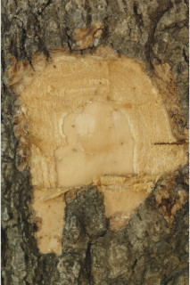
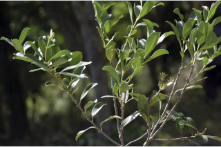
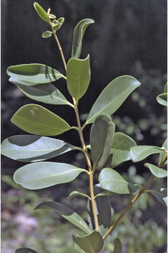
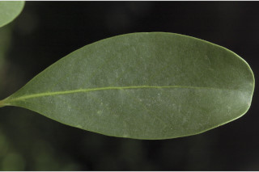
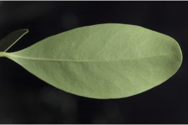
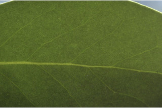
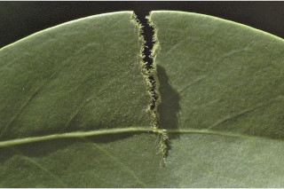
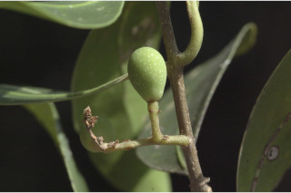
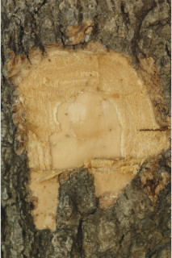
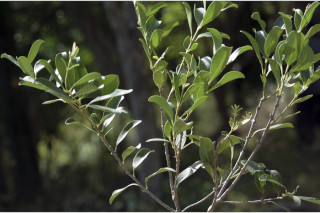
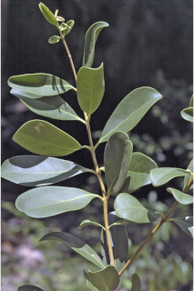
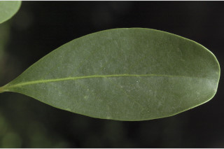
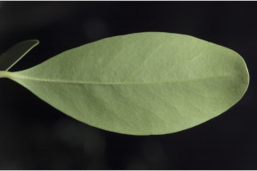
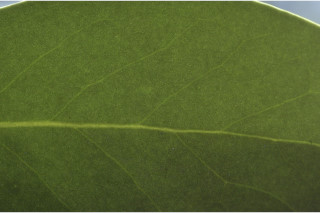
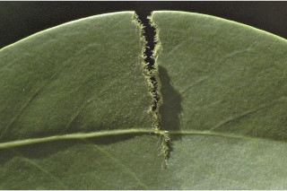
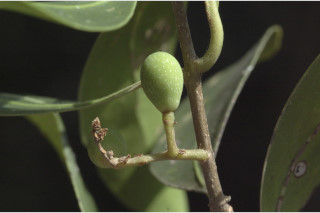